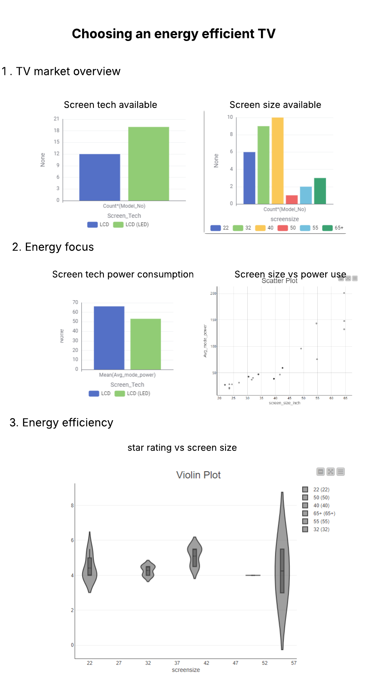

Welcome to Power Electronics
Explore appliance energy consumption trends in the Australian market. With rising electricity prices, Australians are increasingly focused on energy-efficient appliances such as televisions, refrigerators, and washing machines.
Did you know? On average, televisions in Australia consume between 60–200 watts depending on screen size and technology, with OLED and LED models generally more efficient than plasma.
Who is this for?
This visualisation is designed for Australian households and consumers who want to make informed decisions when buying new televisions. Energy efficiency is an important factor in reducing electricity bills and promoting sustainable consumption.
Television Energy Consumption
LCD and LED technologies dominate the Australian market. Plasma is rare and declining.
Most TVs sold fall between 40–55 inches, aligning with consumer preference for mid-range sizes.
LED televisions are the most energy-efficient on average. Plasma consumes significantly more power.
As expected, power use increases with larger screen sizes. This means households should consider both screen size and star rating when purchasing.
Smaller TVs are more likely to achieve higher star ratings, but recent technology improvements allow even 65-inch TVs to achieve 4–5 stars.

About the Data
The dataset comes from the Australian Government Energy Rating Register (downloaded September 2025). It includes information about TV brands, models, screen sizes, technologies, and energy consumption metrics.
- Processing: Filtered for Australian market entries, removed duplicates, converted cm to inches, grouped into screen size categories.
- Privacy: Data contains no personal or sensitive information.
- Accuracy: Data relies on manufacturer submissions; discrepancies may exist.
- Ethics: Analysis aims to promote informed consumer choices and sustainability.
About Power Electronics
We provide insights into energy-efficient appliances to help Australians make smarter purchasing decisions. Our mission is to reduce energy consumption while promoting sustainable technology choices.